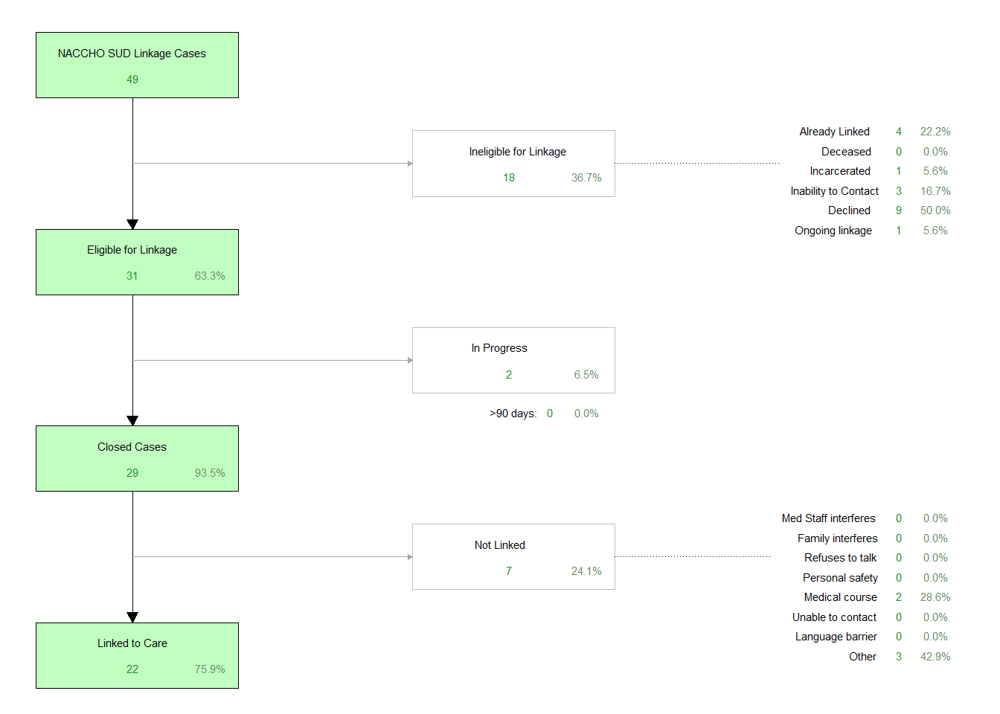

| 2022 Data | % | 2023 Data | % | |
|---|---|---|---|---|
| Total number of encounters | 3774 | - | 4092 | - |
| Total number of unique patients | 3292 | - | 3301 | - |
| Peer Interactions | ||||
| Number of encounters with a peer | 587 | - | 721 | - |
| Number of patients that encountered a peer | 555 | 16.9% | 619 | 18.8% |
| Number of patients assessed | 246 | 44.3% | 261 | 42.2% |
| Number of patients assessed for SUD | 176 | 71.5% | 254 | 97.3% |
| Number of patients positive for SUD | 69 | 39.2% | 108 | 42.5% |
| Number of patients referred for SUD | 164 | 29.5% | 341 | 55.1% |
| Number of patients that received FTS | 11 | 2.0% | 49 | 7.9% |
NACCHO Version 1.0
The National Association of County & City Health Officials (NACCHO) project officially started in June 2023.
Objective 1
The first objective on the 2023 NACCHO workplan is operational and does not have specific data to provide with it. Objective 1 for the NACCHO grant was One peer recovery specialist (PRS) from ASC will be embedded in the UC EIP team within the UC ED by the end of the project year.
Objective 2
The second objective was to increase the number of patients that peers within EIP interacted with patients within the ED. Specifically, Objective 2 for the NACCHO grant was By the end of the project year, increase the number of patients that engage with a peer in the ED by 30%. ASC Peer and Link to Care Coordinator will work with leadership to establish a system for peers to directly link patients to treatment recovery services and harm reduction services. Therefore, this objective requires that we look at the total number of encounters any of our peers had during the prior year and compare that with this specific grant timeline. The 2022 peer data that is pulled will cover the same timeframe as this grant to allow for comparison. Therefore, the 2022 peer encounter data described below covers data collected within EIP for all encounters at UCMC ED between June 1st, 2022 through March 31st, 2023, and the 2023 peer encounter data covers the duration of this grant, so all EIP encounters at UCMC ED from June 1st, 2023 through March 31st, 2024. For the sake of this report, ‘2022’ will refer to the prior data timeframe, and ‘2023’ will refer to the current grant deliverable timeframe.
For the 2022 data, there were a total number of 3774 encounters at UCMC ED, with 3292 unique patients, determined by their medical record number (MRN). There were a total of 587 encounters with any of the peers within EIP operating during 2022, with 555 unique patients (16.9% of all EIP patients seen during this time, 555/3292). For the 2023 data, there were a total number of 4092 encounters at UCMC ED, with 3301 unique patients, determined by their MRN. There were a total of 721 encounters with any of the peers within EIP operating during 2023, with 619 unique patients (18.8% of EIP patients seen during this time, 619/3301).
Additional data captured within Objective 2 describes the screening and brief intervention components of EIP. Risk/needs assessments are one of the services provided by EIP, and assessment questionnaires can be conducted with patients by any staff in EIP trained on the process, and peer support and recovery specialists are trained to have these discussion with patients in the ED. We are able to determine when peers are involved with the EIP encounter, but due to the varied nature of the encounters, it is not always possible to know who conducted the assessment within REDCap, or if the encounter was split/shared among staff. Therefore, it is more appropriate to say that when an encounter had a particular service conducted (i.e. an assessment), anyone attached to that encounter could have potentially been a part of that service.
Assessments can also be broken down into specific types of assessments based on the questions that were asked. For example, this part of the report will discuss SUD Assessments, which are assessments where at least one question pertaining to substance use was answered. Additionally, SUD Assessments most often consist of asking the NIDA-Modified ASSIST, in which we can determine whether an individual actually screens positive for a substance use disorder (SUD) based on meeting criteria on this standardized measure.
In 2022, the total number of patients that were seen in the ED that interacted with a peer that also received a risk/needs assessment was 246 (44.3% of all patients that interacted with a peer, 246/555). There were 176 SUD assessments where at least one SUD question was answered (71.5% of all peer-involved assessments, 176/246). Out of all those that had a SUD Assessment, there were a total of 69 that screened positive for SUD (39.2% of all peer-involved SUD Assessments, 69/176). For the 2023 data, the total number of patients that were seen in the ED that interacted with a peer that also received a risk/needs assessment was 261 (42.2% of all patients that interacted with a peer, 261/619). There were 254 SUD assessments where at least one SUD question was answered (97.3% of all peer-involved assessments, 254/261). Out of all those that had a SUD Assessment, there were a total of 108 that screened positive for SUD (42.5% of all peer-involved SUD Assessments, 108/254).
Referrals are also provided to the patient during the encounter, and can be general or specific to particular conditions or needs. As with the services delivered, if multiple staff may be involved in an encounter, then the referrals assigned to all those involved. Objective 2 for the NACCHO grant discusses referrals specific to SUD, and are captured in each encounter. For 2022 data, the total number of patients that interacted with a peer that received a referral specific for SUD was 164 (29.5% of all patients that interacted with a peer, 164/555). For the 2023 data, there were a total of 341 patients that received a referral after an encounter with a peer (55.1% of all patients that interacted with a peer, 341/619).
Fentanyl test strips (FTS) can also be provided to the patient during the encounter, and is documented within the REDCap database. Distributions of FTS cannot be specifically attributed to a specific person involved in the encounter, as with other variables described earlier. Objective 2 for the NACCHO grant also discusses FTS distributions. It is important to note that reporting of FTS distributions started in June 2023, but distributions occurred prior to this date. For the 2022 data, there were a total of 11 patients that received FTS during their encounter with a peer (2.0% of all patients that interacted with a peer, 11/555). For the 2023 data, there were a total of 49 patients that received FTS during their encounter with a peer (7.9% of all patients that interacted with a peer, 49/619).
All of the data presented above is summarized in the table below, comparing 2022 data with 2023 data where applicable.
The deliverables for Objective 2 can also be described using the data that is specific to the ASC peer recovery specialist (PRS) that was introduced into EIP. The specific ASC PRS started in 2023, so only 2023 data is represented in this section. The total number of encounters where the specific ASC PRS was involved was 243 encounters, with 237 unique patients.
It is important to note that the data provided here is specific to the number of encounters, not the unique number of patients. The unique number of patients engaged in ASC PRS SUD linkage will be discussed later. The important data relevant to the ASC PRS encounters are the linkage to care (LTC) cases that were initiated after they encountered a patient within the ED. After engaging with patients in the ED and discussing referrals and linkage needs, a total of 52 LTC cases were opened by the ASC PRS (21.4% of all encounters by the ASC PRS, 52/243). There were a total of 49 LTC cases specifically for SUD (94.2% of all LTC cases opened by the ASC PRS, 49/52). Out of all LTC cases opened for SUD by the ASC PRS, there were a total of 22 that were successfully linked to care (75.9% of all SUD LTC cases opened by the ASC PRS, 22/49). The LTC flow diagram specific to the SUD LTC cases opened by the ASC PRS is provided after the summary table to show how many cases were “eligible” for linkage and successfully linked for the true success rate of the linkage cases. “Eligible” linkage is determined by those our staff can truly engage and follow-up with to get linked to care. Finally, transportation assistance was one metric discussed in Objective 2, and the total number of SUD LTC cases opened by the ASC PRS where transportation assistance was provided was 5 cases (10.2% of all SUD LTC cases opened by the ASC PRS, 5/49).
The total number of assessments conducted by the ASC PRS was 106 (44.7% of all encounters by the ASC PRS, 106/243). The number of assessments that were for SUD for the ASC PRS was 104 (98.1% of all assessments by the ASC PRS, 104/106), with a total of 56 SUD assessments where the individual screened positive for SUD (53.8% of all SUD Assessments by ASC PRS, 56/104). The number of encounters where the individual was provided a referral for SUD by the ASC PRS was 116 (48.9% of all encounters by the ASC PRS, 116/243), and a total of 24 encounters where the individual was provided with FTS (10.1% of all encounters by the ASC PRS, 24/243).
All of the data presented above is summarized in the table below, with the 2023 data regarding the ASC PRS’s specific encounters.
| 2023 Data | % | |
|---|---|---|
| Total ASC PRS encounters | 243 | - |
| Total ASC PRS patients | 237 | - |
| ASC PRS Interactions | ||
| Number of LTC Cases | 52 | 21.4% |
| Number of SUD LTC Cases | 49 | 94.2% |
| Number of SUD LTC Cases linked to care | 22 | 75.9% |
| Number of SUD LTC Cases with transportation assistance | 5 | 10.2% |
| Number of patients assessed | 106 | 44.7% |
| Number of patients assessed for SUD | 104 | 98.1% |
| Number of patients positive for SUD | 56 | 53.8% |
| Number of patients referred for SUD | 116 | 48.9% |
| Number of patients that received FTS | 24 | 10.1% |
The details of the NACCHO SUD linkage to care process discussed above are highlighted below in the linkage flow diagram to provide additional information about why cases are considered “ineligible” vs. “eligible” and how many cases are still in progress, linked, or why cases were not linked to care. This is the total number of cases opened by the ASC PRS, not the unique number of patients involved in the LTC process. The unique number of patients engaged in LTC are discussed later when discussing follow-up contact.

Objective 3
The final objective for the NACCHO grant describes the follow-up contact for patients encountered by the ASC PRS. The ASC PRS specifically followed up with those patients that were engaged in our linkage to care efforts, with the ASC PRS responsible for the linkage outreach specifically for those cases in which they initiated. Objective 3 for the NACCHO grant was By the end of the project year, attempt to contact 100% of patients the peer interacts with in the ED within 4 weeks following discharge. The data provided here are specifically for those SUD LTC cases that were opened by the ASC PRS.
Again, the total number of unique patients encountered by the ASC PRS was 237. The total number of those that had a SUD LTC case opened was 49 (20.7% of all patients encountered by the ASC PRS, 49/237). Out of all those that were engaged in SUD LTC with the ASC PRS, there were a total of 39 individuals where the ASC PRS attempted contact after the initial ED encounter (79.6% of all individuals engaged in SUD LTC with the ASC PRS, 39/49), meaning 10 (20.4%) had no contact attempts by the ASC PRS.
For those patients where the ASC PRS was attempted, 26 were successfully contacted within 7 days of the initial encounter (66.7% of all patients where contact was attempted by the ASC PRS, 26/39). There were 0 patients where contact was successfully made by the ASC PRS within 14 days of the initial encounter (0.0% of all patients where contact was attempted by the ASC PRS, 0/39). Finally, there were 0 patients where contact was successfully made after 14 days past the initial encounter (0.0% of all patients where contact was attempted by the ASC PRS, 0/39). Therefore, there were 13 patients where the ASC PRS was unsuccessful in contacting the patient (33.3% of all patients where contact was attempted by the ASC PRS, 13/39).
All of the data presented above is summarized in the table below, with the 2023 data regarding the ASC PRS’s specific contact attempts with those engaged in SUD LTC with the ASC PRS.
| 2023 Data | % | |
|---|---|---|
| Total ASC PRS patients | 237 | - |
| ASC PRS SUD LTC Cases | 49 | 20.7% |
| ASC PRS SUD LTC | ||
| Number of patients with no contact attempts | 10 | 20.4% |
| Number of patients attempted to contact | 39 | 79.6% |
| Number of patients contacted within 7 days | 26 | 66.7% |
| Number of patients contacted within 14 days | 0 | 0.0% |
| Number of patients contacted after 14 days | 0 | 0.0% |
| Number of patients unable to contact | 13 | 33.3% |
NACCHO Patient Demographics
| EIP Patients | Peer-Encountered Patients | ASC PRS Patients | ASC PRS SUD LTC Patients | |
|---|---|---|---|---|
| Total Patients | 3301 | 619 | 237 | 49 |
| Sex at Birth | ||||
| Male | 1931 | 399 | 161 | 30 |
| Female | 1359 | 218 | 75 | 19 |
| Other/Unknown | 18 | 2 | 1 | 0 |
| Gender Identity | ||||
| Male | 1812 | 389 | 154 | 30 |
| Female | 1281 | 217 | 74 | 19 |
| Transgender/Nonbinary | 27 | 3 | 0 | 0 |
| Other/Unknown | 206 | 12 | 10 | 0 |
| Race/Ethnicity | ||||
| White | 1256 | 331 | 129 | 29 |
| Black/African American | 1332 | 191 | 59 | 11 |
| Asian/Pacific Islander | 13 | 1 | 1 | 0 |
| American Indian/Alaska native | 3 | 0 | 0 | 0 |
| Hispanic/Latinx | 155 | 19 | 5 | 1 |
| Biracial/Multiracial | 572 | 69 | 37 | 8 |
| Other Rac | 33 | 9 | 6 | 0 |
| Unknown Race | 26 | 2 | 1 | 0 |
| Insurance Coverage | ||||
| Uninsured/Self-Pay | 422 | 65 | 33 | 3 |
| Medicaid | 2105 | 429 | 169 | 35 |
| Medicare | 193 | 30 | 10 | 1 |
| Dual MDCD/MDCR | 145 | 32 | 4 | 2 |
| UC Health (Levy) | 0 | 0 | 0 | 0 |
| Military/VA | 10 | 3 | 0 | 0 |
| Private | 223 | 24 | 11 | 3 |
| Unknown | 247 | 36 | 10 | 5 |
| EIP Patients | Peer-Encountered Patients | ASC PRS Patients | ASC PRS SUD LTC Patients | |
|---|---|---|---|---|
| Total Patients | 3301 | 619 | 237 | 49 |
| Populations of Interest | ||||
| WOC | 796 | 95 | 31 | 9 |
| Youth | 914 | 94 | 32 | 6 |
| MSM | 79 | 9 | 5 | 2 |
| IDU | 241 | 83 | 30 | 9 |
| HRHS | 431 | 66 | 30 | 8 |
| Appalachian | 181 | 33 | 17 | 5 |